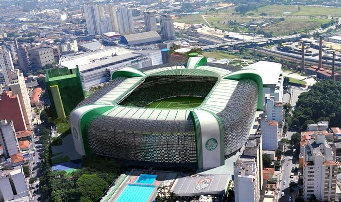

O Allianz Parque inaugurado em 19/11/2014 substituindo o antigo Palestra Itália é o atual estádio do Palmeiras.
Segundo o Site oficial do Clube:
Moderno e imponente, o Allianz Parque é a principal arena multiuso da América Latina. Localizada no coração de São Paulo, maior metrópole do continente, no mesmo solo que por mais de 100 anos abrigou o Parque Antarctica e, posteriormente, o Estádio Palestra Italia, a casa do Palmeiras foi reinaugurada em 2014 como um marco do centenário do clube e hoje é um dos grandes orgulhos da torcida alviverde.
A lista com o elenco atual do palmeiras está disponivel no site do clube
Clique Aqui Para visualizar O elenco atual do clube